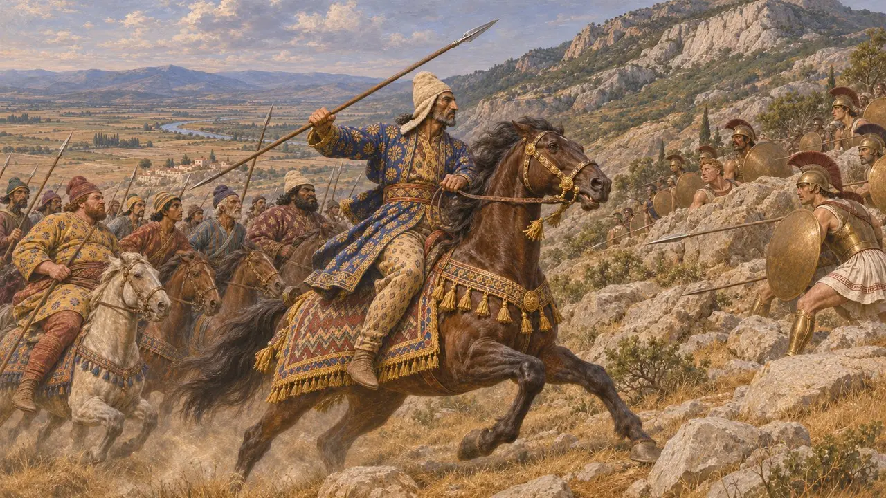
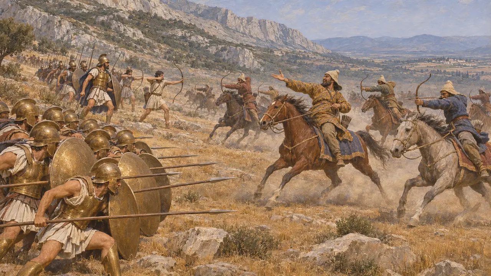
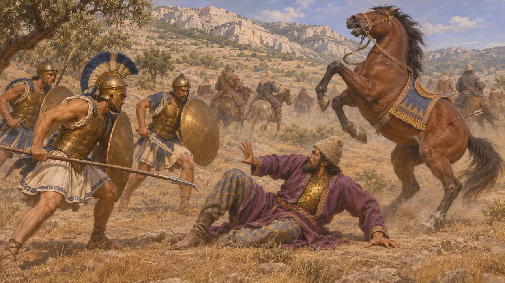
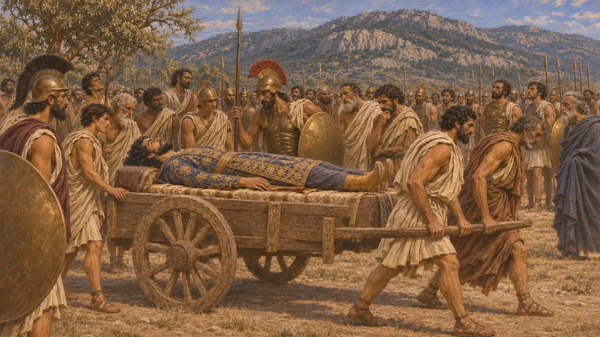
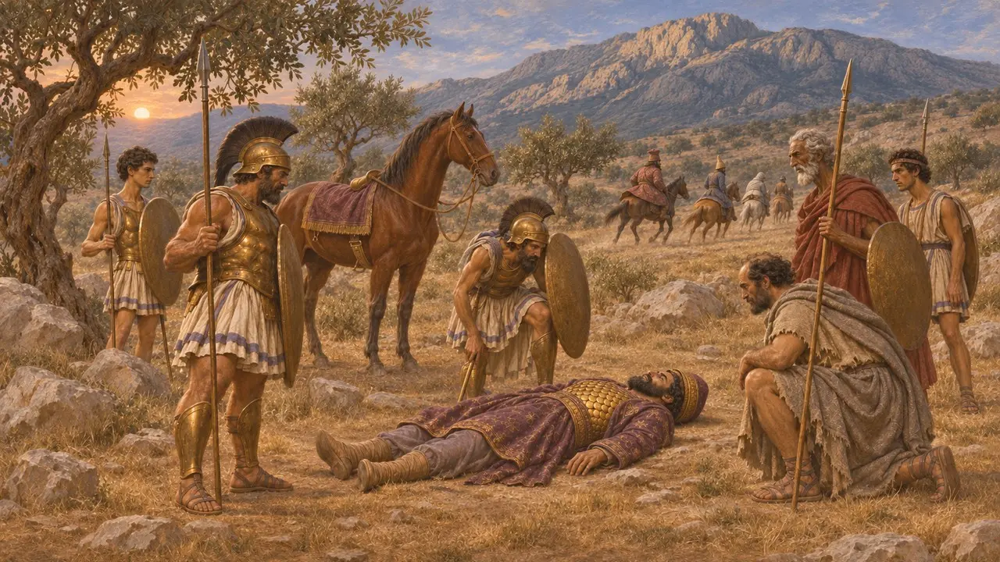

Enciclopedia › Battaglie ed eventi

La morte di Masistio
Scontro di cavalleria sotto il monte Citerone, presso Eritre in Beozia, 479 a.C.
Nel gioco: Livello 11: Il finale
Nel primo grande scontro della campagna di Platea, Mardonio inviò tutta la sua cavalleria al comando di Masistio contro i Greci accampati sulle pendici del Citerone, presso Eritre. Masistio fu disarcionato quando una freccia colpì il suo cavallo, e i soldati ateniesi lo uccisero. Erodoto riferisce che la sua morte fu pianta in tutto il campo persiano e diede ai Greci la fiducia necessaria per scendere nella piana di Platea.
Nel gioco: Il gioco lo presenta come la battaglia di cavalleria di Eritre, con Masistio disarcionato e ucciso, come racconta Erodoto. I cavalieri erano al comando di Mardonio; Serse era già tornato in Asia e non era presente allo scontro.

I Greci sulle pendici del Citerone
Racconto anticoErodoto dice che l'esercito alleato dei Greci, al comando dello spartano Pausania, superò il Citerone e prese posizione sulle sue pendici inferiori presso Eritre, tenendosi lontano dalla pianura aperta. Mardonio, accampato presso il fiume Asopo, mandò contro di loro tutta la sua cavalleria. La guidava Masistio, che Erodoto descrive come molto stimato fra i Persiani, in sella a un cavallo niseo con un morso d'oro e ricchi finimenti.
Herodotus 9.15, 9.19-20

L'attacco ai Megaresi
Racconto anticoI cavalieri attaccarono squadrone per squadrone, scagliando frecce e schernendo i Greci. I Megaresi tenevano il terreno più esposto e mandarono a dire a Pausania che non potevano resistere senza rinforzi. Erodoto dice che si offrirono solo gli Ateniesi: 300 uomini scelti agli ordini di Olimpiodoro figlio di Lampone, con degli arcieri tra loro.
Herodotus 9.20-21

Come cadde Masistio
Racconto anticoUna freccia colpì il cavallo di Masistio al fianco; l'animale s'impennò e lo disarcionò. Gli Ateniesi gli furono addosso, ma egli indossava una corazza di scaglie d'oro sotto una tunica di porpora e i loro colpi non gli fecero alcun male, finché un uomo lo trafisse attraverso l'occhio. Dapprima la cavalleria non vide che era caduto, poi si lanciò in massa per recuperarne il corpo; gli Ateniesi cedettero terreno finché non sopraggiunse il resto dell'esercito greco, e i cavalieri si ritirarono.
Herodotus 9.22-23

Il lutto nell'accampamento e il corpo sul carro
Racconto anticoErodoto racconta che l'accampamento persiano pianse Masistio come l'uomo più onorato dopo lo stesso Mardonio: i soldati si rasarono il capo e tagliarono le criniere dei cavalli e delle bestie da soma, e i loro lamenti risuonarono per tutta la Beozia. I Greci deposero il corpo su un carro e lo condussero lungo le loro linee, e gli uomini lasciavano i ranghi per vederne la statura e l'aspetto. Incoraggiato, l'esercito si mosse poi verso ovest, in direzione di Platea e della sorgente Gargafia.
Herodotus 9.24-25

Una storia raccontata solo dai Greci
ContesoNessun testo persiano sopravvissuto descrive questo scontro, e ogni dettaglio viene da scrittori greci i cui informatori erano probabilmente ateniesi. Gli storici notano che il racconto attribuisce ad Atene il salvataggio dei Megaresi, cosa che lusingava l'orgoglio ateniese, e che Erodoto non fornisce né la consistenza della cavalleria né il conteggio delle perdite. La maggior parte ammette una vera scaramuccia e la morte di un comandante, ma il suo peso dipende dal racconto greco. Più tardi il viaggiatore Pausania vide ad Atene una corazza che si diceva fosse la sua.
Plutarch, Aristides 14; Pausanias 1.27.1; M. A. Flower and J. Marincola, Herodotus: Histories Book IX, 2002
Fonti
- Herodotus 9.15-25
- Plutarch, Aristides 14
- Pausanias, Description of Greece 1.27.1
- M. A. Flower and J. Marincola, Herodotus: Histories Book IX, 2002
- P. Briant, From Cyrus to Alexander, 2002